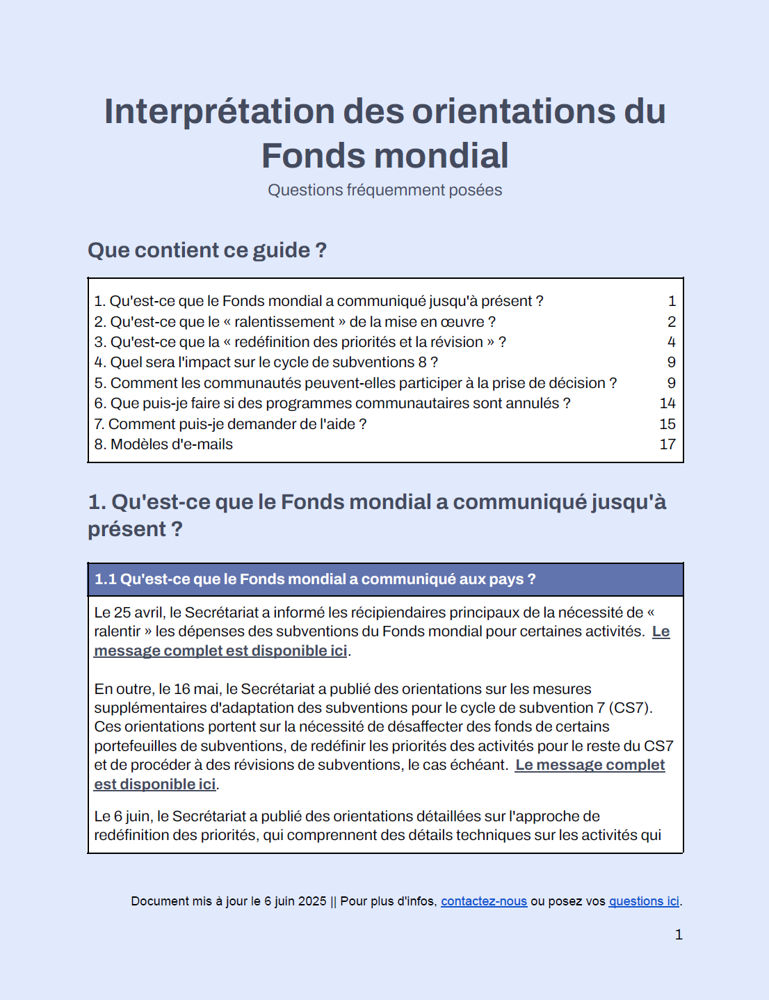
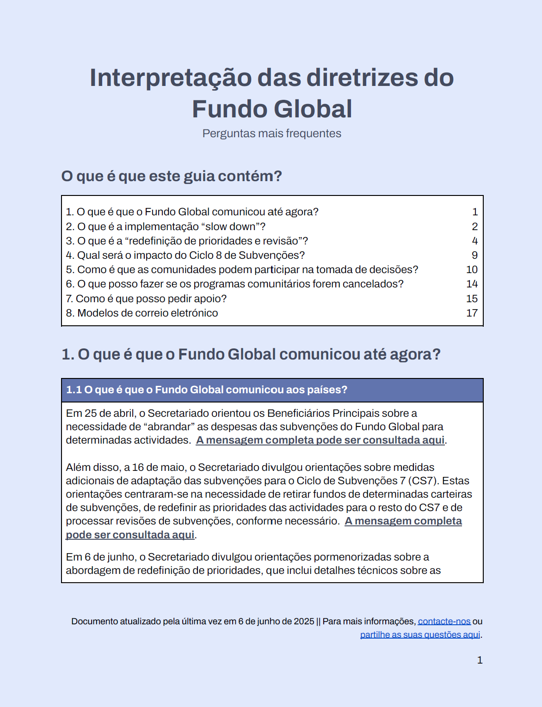

Resources
I'm looking for:
Select an option
Dashboards
Guides
Reports
Dashboards
CCM Dashboard
UQD Dashboard
Guides
Interpreting Global Fund Guidance - FAQ

Interprétation des orientations du Fonds mondial - FAQ

Interpretação do Guia do Fundo Global - FAQ
Community Guide to Reprogramming Global Fund Grants
Guide communautaire à la reprogrammation des subventions du Fonds mondial
Reports
A Roadmap for Strengthening Community Engagement with Global Fund
Feuille de route pour le renforcement de l'engagement des communautés auprès du Fonds mondial
Community engagement in Global Fund Country Coordinating Mechanisms: Findings from the RISE Study
Engagement communautaire dans les instances de coordination nationale du Fonds mondial: Conclusions de l'étude RISE
Participación comunitaria en los Mecanismos de Coordinación de País del Fondo Mundial: Resultados del estudio RISE
Envolvimento da Comunidade nos Mecanismos de Coordenação do Pais do Fundo Global: Conclusões do Estudo RISE
Участие сообществ в Страновых Координационных Комитетах Глобального Фонда: Результаты исследования RISE